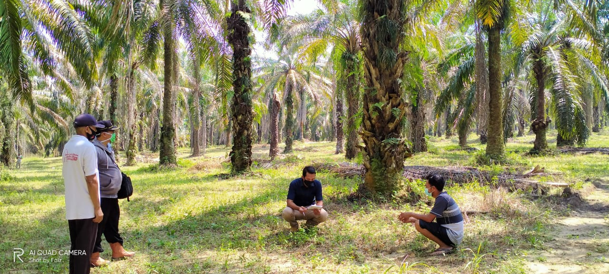

The world population has been increasing rapidly in line with the rising demand for food. Vegetable oil is one of the demands that the global communities required significantly utmost during the last few decades. This has been creating ample job opportunities, poverty alleviation, and economic growth. Although it has spurred criticism about the massive tropical forest conversion to develop more palm oil plantation.
 About 50 % of the worldwide oil palm plantation is managed by
smallholders. Thus, they also contribute to either the positive or
negative impact of palm oil production and expansion. The smallholder
has predominated the palm oil land about 4 % contract scheme and 38 %
independent smallholders in Indonesia. The contract scheme was part of the government support program
through the nucleus and plasma scheme while the independent smallholder non-binding to any programs and merely self-initiated
to develop palm oil.
The contract scheme development was very limited where it relies on government initiation and support.
Most of the program has been terminated and future expansion is hardly to perpetuate due to lack of land and budget allocation.
However, the scheme smallholder palm oil trees have mostly reached its production span and it requires to be replanted.
Since there is not any government program available thus some will replant their plot independently and those
who still connected the mill partner will have some opportunities to continue their contract scheme program.
Contradictory with the independent smallholder where they have more freedom to expand more land for palm oil.
They can develop more plantation as long as financially sufficient and land available. The smallholder palm expansion will also give rise to the risks of deforestation.
They also required to minimize the loss of biodiversity and carbon emission.
Several tools are available to conserve biodiversity and cultural values through the High Conservation Value Forest (HCVF) approach, storing more carbon biomass through High Carbon Stock (HCS).
Although, there is a need to have profound simple guidance for the smallholder to utilize those tools.
Most smallholder in Indonesia has only 2 hectares of land in average.
It differs from the big growers where they allow to use the land utilize right that reach hundreds of thousand hectares.
Although, the smallholder receives land property right ownership the size is limited and small.
Since the existing large number of smallholders and its potency of expansion are widely open. Thus, the risk of deforestation is also raising.
Reversely, the land property right ownership has given the opportunity to the smallholder to utilize their land as they like.
This includes converting any forest stand if it sits above a smallholder’s property.
Sustainability standard such Roundtable Sustainable Palm Oil (RSPO) is one of the toolkit packages to transform the palm oil producers
to minimize environmental and social impact while boosting their economic level. However, the smallholder who has the land of high conservation
value and high carbon stock will lose the opportunity to gain tangible economic values.
High conservation values forest has 6 values such as; (i) biodiversity protection, (ii) Large forest areas (iii) fragile ecosystem (iv) environmental services (v)
livelihood dependency upon non-forest timber product (vi) cultural and heritages. Whilst, high carbon stock defines as land with abundant
carbon stock stored in the trees and other vegetation. The landowners could generate those environmental services to contribute to the
worldwide beneficiaries where its benefit will depend on the demand of each individual or organization.
Each conservation value has its own specific environmental services. This specification will fulfill the demand of respective beneficiary's interest.
Whether, the conservation of endangered species, fragile ecosystem, or unique cultures and heritage. Climate change disasters due to the global
warming impact will impose fear among some of the human population. Thus, high carbon stock derived from vast areas of standing trees will produce services to reduce emissions.
The landowners producing these environmental services through setting aside their land for conservation will bear some opportunity losses.
Furthermore, this set-aside land should be managed in order to maintain and enhance the values and services. The landlord will also bear the opportunity cost in managing the lands.
These environmental services should be monetized due to cope with the opportunity losses and costs.
The landowner will make the basis of their decision whether to set aside their land for preservation through cost and benefit analysis.
It relates to their subsistence characteristic where their livelihood dependency on natural resources is quite high.
RSPO standard was set up and promoted through market-driven approach. It required practices that respect environmental, social, and economic considerations. It will transform the palm oil growers' practices in order to meet market expectations upon sustainable palm oil products.
It is expecting through the standard implementation will ease the earth's burden due to massive exploitation. Thus, individuals or organizations enjoy the environmental services provided by the landowner willing to compensate and paying for these services. This will part of the values offset which embedded into the sustainable oil palm product.
The beneficiaries will select which values that they can pay and how much. Whilst, the supply chain actant could elaborate on the mechanism on how this payment can be made and distribute to the landowners. The environmental services trade-off mechanism will accommodate the landowner to make a decision whether setting aside the forest land is economically feasible for their livelihood.
Certified RSPO product supply chains may accommodate these conservation values to be transmitted along its chains. Where the customers or merely the beneficiaries may also pay those values in order to compensate for the opportunity loss and cost of the landowner.
It may prevail for a certain duration of time since the opportunity losses and cost will be measured for a limited period of time.
The environmental services offset mechanism will create a driver tool for the landowner to produces the values through land preservation. There will be supply and demand upon intangible products where there should some beneficiary’ representative willing to pay for the product.
Monetizing environmental services are required to feed the benefit-cost analysis of the landowner.
Creating an environmental services trade-off mechanisms is one tool to make way for oil palm producers to contribute to reducing the environmental risks. Both producers' and beneficiary’ greater role and willingness to pay are also crucial to operate the precedented mechanism.
Sustainable standards and its inspection mechanism will significantly guarantee the services' product quality. This would create trust in both producers and the customers.